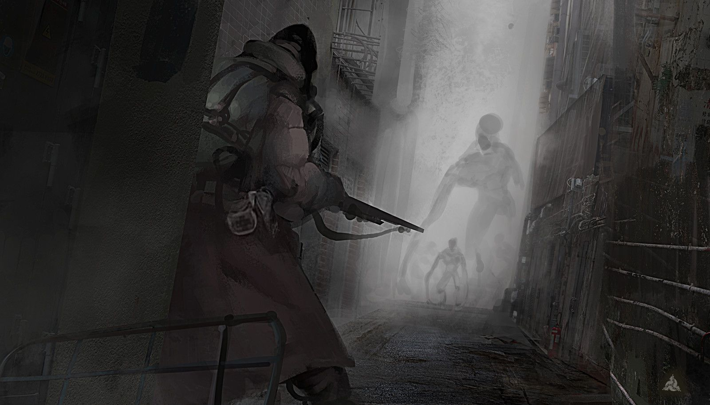

Зево-803
Заунывный, изредка повизгивающий скрип, разносимый, повисшей на огрызке арматуры, керосиновой лампой, разлетался по темному и, казалось, бесконечному коридору. Её слабый шипящий пламень бился о покрытые копотью «стенки» своей клетки и скалился на окружающий мир редкими отблесками, отбрасываемыми: то на стены, то на липкий от крови пол с вкраплениями гильз, то на туши десятков существ, застывших в самых различных позах.
— Андрей? – в свете керосиновой лампы показалось уродливое подобие мужского лица: сталь, перемешанная с кровью и засохшей слизью, сквозь что и выглядывали глаза.
Андрей хрипло выдохнул, уставившись на спросившего: большие, грустные серые глаза – все что было видно из прорези самопальной каски-хрущёвки. Мужчина помнил, как товарищ гордился приделанным забралом и хвалился, что ни одна тварь его не пробьет. Сейчас же оно больше напоминало измятое решето, как и ОЗК – изрезанное тряпье с выглядывающими из-под него стальными пластинами бронежилета. Сам Андрей выглядел не лучше: от его «Бетона» почти ничего не осталось – лишь на груди, туловище и предплечьях еще крепко сидели укрепленные, стеганные куски бронекостюма. С ног он был сорван, отдав себя в жертву, и тем самым продлив жизнь хозяину – но стоило ли это того?
— Патроны в Лёшкинском кончились, - сухо прохрипел Андрей, переведя взгляд на автомат, что лежал у него на коленях. Щелчок. Остекленевший взгляд выцепил в полумраке последний патрон, выглядывающей из единственного магазина. Мужчина еле заметно вздрогнул, - В автомате ещё достаточно, так что повоюем.
Павел молча покачал головой, протянув товарищу длинный, обоюдно заточенный нож. Еще в далеком прошлом он выкрал его у Сержанта, а когда таковым стал сам – получил второй. Что-то пробурчав в ответ на дружеский жест, Андрей приделал клинок к стволу, как и говорили когда-то на учениях – до щелчка, и рывком поднялся с самодельной баррикады.
— Нет, я не понимаю, - совсем молодой парень стоял за спинами своих «коллег» и дрожащими руками перебирал складки еще целого ОЗК. – Что мы здесь забыли?! Черт! – носок его сапога с хрустом вошел в небольшую горку бетонной крошки, та отплюнулась в стороны мелкими камешками. - Черт! Мы не олписы(ОЛПС), а всего лишь обчи(ОБЧ(у))! У нас нет ни огнеметов, ни гранита, ни чертового пенобетона!
Юноше было около девятнадцати циклов: не столь молод для Гигахруща, но и не настолько взрослый, чтобы встретиться с порождениями Самосбора. Он боялся, а страх последнее, чем должно вонять от воина в любой ситуации – так учили комиссар. Андрей молча смотрел в сумрак провала, когда за его спиной очередная тирада юнца была оборвана звонкой пощечиной Павла.
— Выблядок, - глухо прошипел Павел, выпрямляя жалобно скрипящее забрало, а вернее его остатки. – За твоей спиной блок, наполненный детьми и женщинами. Ни одного Ликвидатора на этаже нет и не будет еще около трех часов из-за всплеска активности на 801. Куда ты хочешь сбежать, Коль?! Под бабские юбки, а?! – огромная пятерня сжалась на плече уже начавшего всхлипывать парня. – Сбежим мы – падет весь этаж, сдохнем – помрут все. За нашими спинами проржавевшая герма, а за ней – еще не сегментированный огромный общий жилой блок. Так что сожми автомат и стой, пока не оторвут ноги.
Коля уже не дрожал и не сопел, словно маленький, обиженный ребенок, лишь изредка он вытирал сочащиеся из глаз слезинки. Кивнув, парень тихо добавил:
— Вас понял, сержант.
— И прекрасно. Не забудь снять с предохранителя, - гулко расхохотался Павел, хлопнув подчиненного по плечу так, что тот пошатнулся. – Иначе помрешь раньше меня.
Не только человечество роет бесконечные коридоры, строя все новые и новые будущие склепы. Нет, по соседству с ними множатся и туннели тварей, оставшихся, где-то на первых этажах, после тумана. Прорываясь все выше, иногда они обваливают потолки и стены, образуя «Зево» - неизвестной глубинны провал, сочащийся самыми разными уродливыми порождениями Самосбора. Нельзя убить всех, ведь их количество бесконечно. Можно только удержать чудовищ до прихода группы Бетонирования и огнемётчиков…
Павел тихо подошел к Андрею, встав по правую сторону от него, и втянул окровавленными ноздрями воздух – начинало вонять сырым мясом, а во мраке уже слышался скрежет сотен когтей по бетонным стенам провала.
— Сколько заберешь с собой? – ухмыльнулся Павел, передернув затвор.
Андрей криво улыбнулся, похлопав по спине старого друга:
— Зависит от крепости ножа, - оскалился он.
Через пару мгновений слева от Андрея встал Коля. Сжав автомат в руках, он направил слегка подрагивающее дуло во мрак.
— А нас запомнят? – закашлявшись из-за поднявшейся пыли, тихо спросил он.
— А много ты видел тех, кто целую смену сдерживал Зево? – сержант кивнул своим мыслям и усмехнулся. – Вот и я никого не видел. Но это пока что...
Шум нарастал и из какофонии воплей уже можно было выделить отдельные рыки и клацанья челюстей. Бетонный пол содрогался от мощных ударов лап и казалось, что он вот-вот не выдержит и обрушится. Из густого сумрака вырвались первые, обтянутые тонким слоем розовой кожи, клыкастые пасти…
— За Гигахрущ!
— За Партию!
— За Человечество!
******
Павел угадал – группа Бетонирования прибыла через три часа. Когда они открыли гермодверь и сделали предупреждающий залп из огнеметов, пред ними предстала пугающая картина. Бетонные блоки, играющие роль баррикад были снесены, а на их месте высилась почти метровая стенка из бесформенных туш чудовищ. Почти перед гермодверьми же валялась огромная шестиногая тварь, явно желавшая её выбить – из виска монстра торчал штык-нож с обломанным дулом винтовки на его рукояти. Защитников, или хотя бы их тел – нигде не было.
Только на кривой арматуре, торчащей из стены, висело три окровавленных жетона на цепочках. Оттерев их от крови, капитан прочел: «Павел», «Андрей», «Николай».